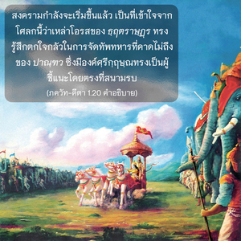

ในขณะนั้น อรฺชุน โอรสของ ปาณฺฑุ ทรงนั่งอยู่บนราชรถที่มีธงรูป หนุมานฺ และหยิบคันธนูเพื่อเตรียมที่จะยิงศรออกไป โอ้ กษัตริย์หลังจากทรงมองไปที่เหล่าโอรสของ ธฺฤตราษฺฏฺร ซึ่งขับราชรถมาในกองทัพเรียงรายกันเป็นทิวแถว จากนั้น อรฺชุน ก็ทรงตรัสกับองค์ศรีกฺฤษฺณด้วยคำพูดดังต่อไปนี้

สงครามกำลังจะเริ่มขึ้นแล้ว เป็นที่เข้าใจจากโศลกนี้ว่าเหล่าโอรสของ ธฺฤตราษฺฏฺร ทรงรู้สึกตกใจกลัวในการจัดทัพทหารที่คาดไม่ถึงของ ปาณฺฑว ซึ่งมีองค์ศฺรีกฺฤษฺณทรงเป็นผู้ชี้แนะโดยตรงที่สนามรบ ธงรูปหนุมานของ อรฺชุน เป็นเครื่องบ่งบอกถึงชัยชนะอีกอย่างหนึ่ง เพราะหนุมานได้ร่วมมือกับพระรามในการทำสงครามระหว่างพระรามและราวณ (ทศกัณฐ์) และพระรามทรงได้รับชัยชนะ ณ ที่นี้ พระรามและหนุมานทรงได้ประทับอยู่บนราชรถเพื่อที่จะช่วย อรฺชุน ศฺรีกฺฤษฺณ คือ พระราม และที่ใดที่พระรามทรงประทับอยู่ ผู้รับใช้นิรันดร หนุมานและมเหสีนิรันดร พระนางสีดา หรือเทพธิดาแห่งโชคลาภก็จะประทับอยู่ด้วยเช่นกัน ดังนั้น จึงไม่มีเหตุอันใดเลยที่จะทำให้เกิดความรู้สึกกลัวศัตรู ยิ่งไปกว่านั้นศฺรีกฺฤษฺณผู้ทรงเป็นเจ้าแห่งประสาทสัมผัสก็ทรงเสด็จมาด้วยพระองค์เองเพื่อให้คำแนะนำ และมีคำชี้แนะที่ดีทั้งหมดให้กับ อรฺชุน ในการต่อสู้ สภาวะอันเป็นสิริมงคลเช่นนี้นั้นองค์ภควานฺทรงจัดให้เพื่อสาวกนิรันดรของพระองค์ ซึ่งเป็นสิ่งที่บ่งบอกถึงชัยชนะ